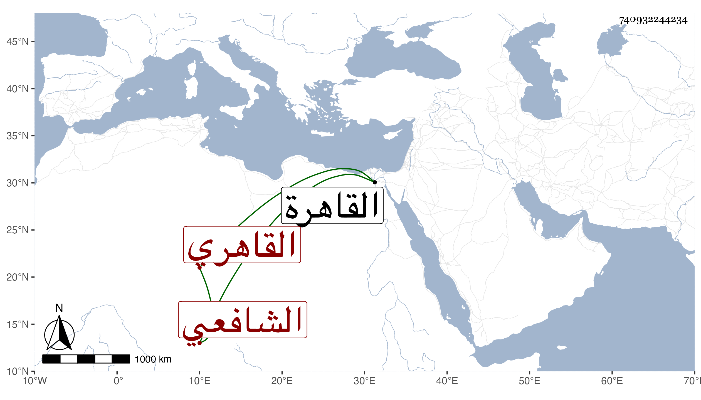

0902Sakhawi.DawLamic.ITO20230111-ara1.EIS1600.740932244234
Biography ID: 740932244234
1061
محمد بن أحمد بن عبد الله بن رمضان الشمس أبو النجا وأبو المعالي بن الشهاب القاهري الشافعي ويعرف بالمخلصي . ولد تقريبا سنة خمس وخمسين وثمانمائة بالقاهرة ونشأ بها في كنف أبويه فحفظ القرآن والشاطبية والعمدة والمنهاجين الفرعي والأصلي وألفية النحو وعرض في سنة ثمان أو تسع وستين على الجلالين ابن الملقن والبكري والعبادي والبامي وابن أسد والفخر بن الاسيوطي وعثمان المقسي والبهاء المشهدي وأمام الكاملية والمحيوي الطوخي وخطيب مكة أبي الفضل والصلاح المكيني والولوي الأسيوطي والزين زكريا والنجم يحيى بن حجى والشرف ابن الجيعان والبقاعي والتقي القلقشندي والديمي وسبط شيخنا ومحمد بن قاسم الطنبذاوي وكاتبه الشافعيين والتقي الشمني والأمين الأقصرائي وابن قاسم والبرهان ابن الديري والمحب بن الشحنة الحنفيين واللقاني وعبد الغفار والنور بن التنسي المالكيين والعز الكناني والنور الشيشيني الحنبليين وأجازوه في آخرين وتلا للسبع إفرادا ثم جمعا على الزين الهيثمي وقرأ عليه الشاطبية حفظا وجمعا على الشمس ابن الحمصاني ولنافع وحمزة والكسائي وأبي عمرو ثم للعشر جمعا إلى قول معروف من البقرة على الزين جعفر السنهوري وأذنوا له وشهد على الأخير في المحرم سنة اثنتين وتسعين زكريا وكذا هو والشمس الجوجري وعبد الغني الفارقي على الأول وعمر النشار وزكريا بن حسن الطولوني والجلال بن السيوطي على الثاني واعتنى بالرواية فقرأ أو سمع على الجلال القمصي الكثير ومن ذلك البخاري ومسند الشافعي وسننه والشفا وسيرة ابن سيد الناس وألفية العراقي وجمع الجوامع لابن السبكي بل قرأ عليه بعض شرح المنهاج للدميري بقراءته لبعضه على مؤلفه وعلى الزكي المناوي والملتوتي وهاجر ونشوان ، ومما سمعه عليها فضل الخيل للدمياطي بقراءة أبي الطيب النقاوسي وعلى التي قبلها الرسالة للشافعي بقراءة عبد الحق السنباطي وعليها وعلى التي قبلها جزء أبي الجهم وعلى الزكي بعض ابن ماجه وأبي داود بل سمع على الشمني العمدة وقطعة من شرحه لنظم النخبة ومن لفظه المسلسل ولازم الديمي في قراءة أشياء كالصحيحين وأربعي النووي واشتغل في الفقه وأصوله والعربية والفرائض والحساب وغيرها وممن لازم في الفقه البدر حسن الأعرج وحضر قليلا عند ابن هاشم وزكريا ولازم الكمال بن أبي شريف سنين عديدة حتى أخذ عنه المنهاج الأصلي وشرح جمع الجوامع للمحلي ما بين سماع وقراءة لكليهما وأذن له في إفادتهما بل وإفادة فن الأصول وأنه لازمه في الفقه والبخاري وغير ذلك وشهد له بأنه شارك في المباحثة الفقهية مشاركة جيدة دلت على طول الممارسة وإجادة المدارسة وأذن له في الإقراء من كتب الفقه ما تحرر وتقرر لديه أيضا في سنة تسعين ومن شيوخه في العربية خالد الوقاد وفي الفرائض والحساب الزين عبد القادر بن شعبان والبدر المارداني وشارك في الفضائل ، وتنزل في الجهات كالمؤيدية ، ولم ينفك عن الاشتغال على طريقة جميلة مرضية حتى مات في ربيع الثاني سنة ست وتسعين في حياة أبويه ودفن بتربة فيروز النوروزي لكونه كان أحد صوفيتها بل فقيها لبني خشكلدي أحد عتقاء الواقف .
